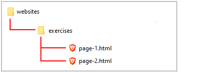
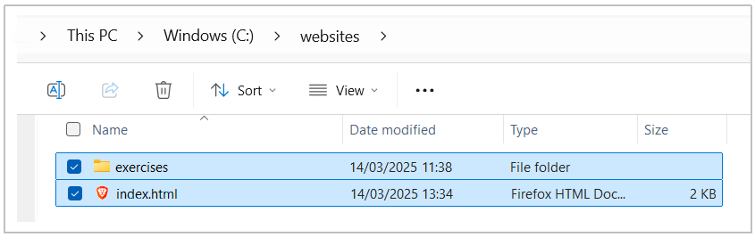

Learning Goals
At the end of this Tutorial you will be able to:
- Understand the basic concept of marking-up text content in HTML.
- Recognise the difference between block-level and inline HTML tags.
- Install the HTMLHint extension in VS Code.
- Use HTMLHint to identify and correct mark-up errors in the HTML code of a web page.
- Using AI to find and correct HTML errors.
About HTML ‘mark up’ in web pages
Adding HTML tags to the text in a web page is called ‘marking-up’. See the examples below.

You ‘mark up’ text content using the angle bracket and forward slash keys.

These HTML tags come in pairs: there is an opening or starting tag and a closing or ending tag (with a / character).

Block-level and inline tags
The <h1>, <h2>, <h3> and <p> tags are all examples of so-called block-level tags. These start a new line or ‘block’ on the web page and take up the full width available (stretch all the way from left to right). They stack on top of each other, one after the other.
A second type of HTML tag is the inline tag. These do not start on a new line and only take up as much width as necessary.

Common examples of inline tags are the <b> and <i> tags.

Installing the HTMLHint Extension
VS Code offers an extension named HTMLHint that will help quickly identify and correct any errors in your HTML mark-up tags. Follow these steps to install it.
- At the bottom-left of the VS Code screen, click the Gears icon and then click the Extensions command.
 Alternatively, you can click the View menu at the top of the screen, and then click the Extensions command.
Alternatively, you can click the View menu at the top of the screen, and then click the Extensions command.

- VS Code opens a new window named Extensions at the left of your screen. Typically, it will show a list of currently popular Extensions. At the top of the list you can see a search box.

- In the Extensions search box, type HTMLHint.

- On the list of extensions found, click HTMLHint.

- The top part of your Extensions window should now look similar to that below.
 Click the blue Install button to install the HTMLHint extension in your VS Code app.
Click the blue Install button to install the HTMLHint extension in your VS Code app. - The top part of your Extensions window should now look as shown below.

- To close the HTMLHint Extensions window, click the close (X) icon at the top.

- To close the Extensions search box, click the large Extensions icon in the Activity Bar at the left of the VS Code screen.

Downloading a second sample web page
In this section, you will create a second sample web page named page-2.html based on a page you download from the Internet. Here are the steps:
- Click on the following web page to open it in a new tab of your web browser: page-2.html
- Right-click anywhere on the web page and choose the Save Page As... command from the context menu displayed.
- Save this HTML file in the üìÅ exercises sub-folder of your üìÅ websites folder with the following name:
page-2.html
In the Save as type box, ensure you choose the option Web Page, HTML Only.

DO NOT name your web page with an upper-case ‘P’ as in Page-2.html.
And DO NOT use some other combination of upper and lower-case letters, such as PAGE-2.HTML or page-2.HTML.
Also, DO NOT enter any blank spaces in the name of your file: type page-2.html NOT page - 2.html or page -3.html.
When finished, your folder and file structure should look as shown below.
Correcting HTML mark-up errors in a web page
Your downloaded page-2.html web page already contains HTML tags. But with some deliberate errors!
Your task is to correct these with the help of the HTMLHint extension.
Note the following:
- In the <head> of every web page there should be just one title and one description.
- In the <body> of every web page there should be just one <h1> tag.
- Every time you enter an opening tag (for example, <h2>), you must also follow it with a closing tag (in this example, </h2>).
- Open the page-2.html file in VS Code and display it in your web browser.
- In VS Code, look at the coloured bar across the bottom of the screen. You can see a warning that your web page contains five errors.
- Click on the number 5 to display the list of errors in the web page. You can also see the line number on which each error occurs.

- It is not an HTML error to have more than one <h1> tag in a web page. However, doing so will confuse Google and other search engines. So change the ‘Introduction’ heading in the web page as shown below.

- Correct the errors and, when finished, resave your page-2.html web page.
Display the page in your web browser. It should now look as shown below.

✅ You have now finished working with your second sample web page.
Using AI to find and correct HTML errors
Another option for finding and fixing HTML errors is to use an AI service. For example:
- In a new browser tab, go to an AI service such as the following: https://copilot.microsoft.com
- Enter this prompt, and then paste in your HTML web page and press Enter.
Below is an HTML file with errors. * Display a list of errors in this HTML page. * Generate a copy of this web page with the errors corrected or removed. *** - Copy the corrected version of the HTML web page produced by the AI and paste it into VS Code.
Updating your home page
You may wish to make a few changes to the current content of your website’s home page.
Begin with the two meta tags in the <head> of the web page.
Here are a few examples you may wish to follow:
<title>Mary Smith | Creative Digital Designer</title> <meta name="description" content="Hi I'm Mary, a UI & UX designer based in Dublin. Mobile and Responsive Web Design, eCommerce Websites, Branding and Logo Design.">
<title>Mary Smith - Independent Web and Digital Developer</title> <meta name="description" content="Freelance Web and Digital Developer crafting innovative online experiences on the web and social media.">
<title>Purple Pixels, Galway's premier web agency</title> <meta name="description" content="We help new and growing businesses turn their ideas into attention-grabbing, customer-winning websites.">
Next, you may want update the text in the <body> of your home page.
- Main heading: Typically, you will want to position your name or the name of your organisation as the top-level <h1> heading. For example:
<h1>Hi, I'm Mary Smith</h1>
<h1>Purple Pixels Web Agency</h1>
- Sub-heading: For your second-level <h2> sub-heading, you will typically summarise your role or the products/services you offer.
<h2>Web / UI Designer</h2>
<h2>Digital Marketing for your business</h2>
- Descriptive text: One or a few short paragaphs about you or your organisation. For example:
<p>I created this website to showcase some of my recent web design work.</p>
In VS Code, your complete index.html web page should now look something like the following.
And in your web browser, your home page should look similar to that below.

✅ You have now finished updating your website home web page.
Uploading your work to Github
You are now ready to upload your work to your account on Github.
- Open a new tab in your web browser and go to Github.com. If you are not already signed in to your Github account, sign in now.

- On your Github home page, click the name of the repository (‘repo’) that holds your web pages. Its name will look as follows, where username is your chosen username on Github.
username.github.io

- On the next Github screen displayed, near the right of the screen, you can see a button named Add file. Click on it.

- From the dropdown list displayed, choose the option Upload files.

- In File Explorer (Windows) or Finder (Apple Mac), drag-and-drop your index.html file and your üìÅ exercises sub-folder to upload them to your repository on GitHub. 
- Scroll down to the bottom of the Github screen, and accept or edit the short message (Add files via upload) in the Commit changes box.
- Finally, click the green Commit changes button to upload your entire exercises sub-folder and all the files it contains.

Your web pages are now published on Github at web addresses similar to the following, where username is the username you have chosen for your GitHub account:
https://username.github.io/index.html
– or simply –
https://username.github.io
https://username.github.io/exercises/page-1.html
https://username.github.io/exercises/page-2.html
It may take a few minutes for your uploaded files to appear on Github.